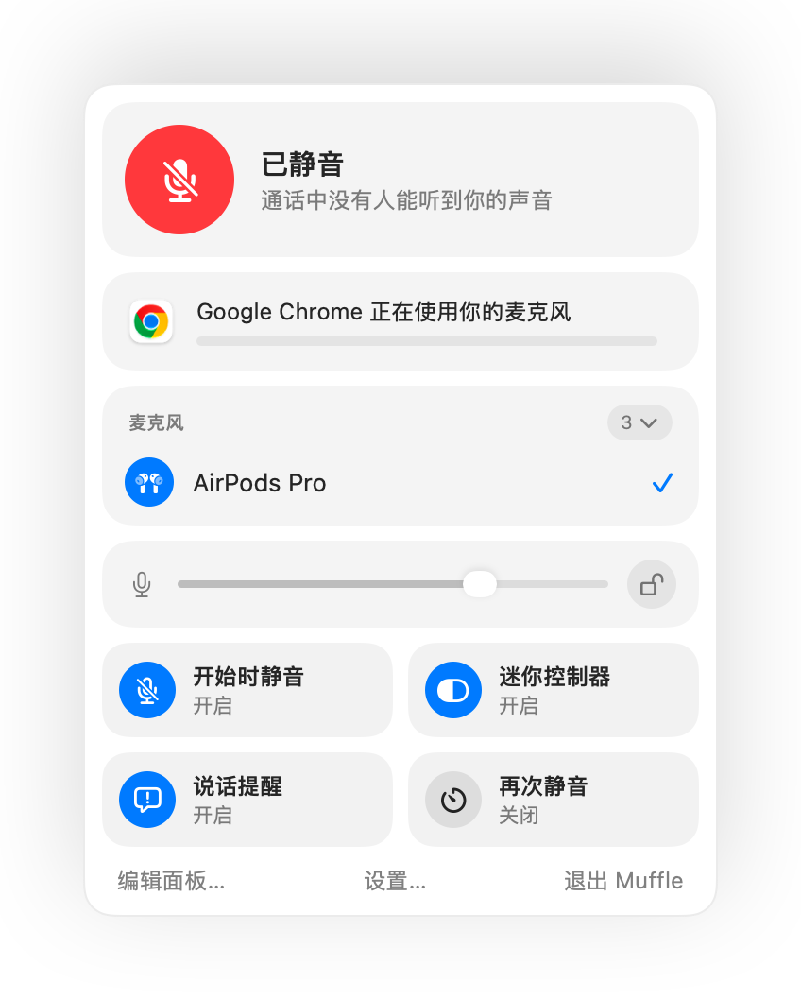

Mac 上 AirPods 无法静音？这里有解决方案
macOS 允许通过按压 AirPods 耳机柄来静音通话，但前提是通话 App 必须支持该功能。许多 App 并不支持，包括 Chrome 以及其中的各种网页会议。此时按压耳机柄会听到短促的错误提示音，系统弹出“无法控制麦克风”提示，通话对方依然能听到你的声音。
Muffle 为所有 App 补齐了这项支持。它会接收该按压操作，将 Mac 麦克风直接静音，并播放正常的静音提示音。
免费试用 Muffle 3 天即将上线 Mac App Store
让 AirPods 按压手势支持静音所有 App
- 安装 Muffle 并允许访问麦克风。macOS 只会将按压操作传递给可以使用麦克风的 App。
- 在“Muffle 设置”中确认已勾选“按压 AirPods 即可切换静音”。
- 加入通话。仅当有 App 正在使用麦克风时，按压操作才会触发静音。
- 按压耳机柄一次即可静音，再按一次即可取消静音。

- 在通话以外的时间，按压耳机柄依然像往常一样用于播放和暂停音乐。
- 如果你的 AirPods 采用了不同的通话控制按压设置，请在“系统设置”的 AirPods 设置中进行检查。
常见问题
为什么按压 AirPods 时 Mac 会播放错误提示音？
因为当前进行通话的 App 不支持 AirPods 静音按压手势，macOS 因而拒绝了该操作。运行 Muffle 后，该按压操作将直接用于静音麦克风。
哪些 AirPods 机型支持静音按压手势？
AirPods Pro、AirPods 3 及后续机型、AirPods Max，以及支持通话控制的 Beats 机型。